Fly an Airship.
------------------------------------------------------------------------
See also QECI, AC, ACInit, ACPlot, HUD, HUDCntrl, @acstate/acstate.m,
LatLon, AirshipTrim, BuildAirshipModel, CoordinateTransform, TimeGUI,
Cross, JD2000
------------------------------------------------------------------------
Contents
Global for the time GUI
global simulationAction
simulationAction = ' ';
Global for the HUD
global hUDOutput
hUDOutput = struct('pushbutton1',0,'pushbutton2',0,'checkbox1',0,...
'checkbox2',0,'checkbox3',0);
Airship database
d = BuildAirshipModel('ASM3');
Flight Condition
h = 21000;
theta = 10*pi/180;
alpha = 0;
V = 15;
Trim Controls
[Thrust,mu,dElv] = AirshipTrim( d, h, theta, alpha, V );
d.control.throttle = Thrust/(2*d.engine.thrustMax);
d.control.mu = mu;
d.control.dELVL = dElv;
d.control.dELVR = dElv;
d.control.dRUDB = 0;
d.control.dRUDT = 0;
initial position
jD = JD2000;
[lat,lon] = LatLon('new york city');
latLonAlt = [lat*pi/180;lon*pi/180;h*1e-3];
rCG = CoordinateTransform( 'llr', 'eci', latLonAlt, jD );
rCG = rCG*1e3;
initial angular velocity
w0 = zeros(3,1);
initial velocity
vCG = V*[cos(alpha);0;sin(alpha)];
v0 = vCG - Cross(w0,d.cG);
initial orientation
eulInit = [0;0;0];
q0 = QECI( rCG, eulInit );
adjust r0 to account for non-CG location of origin
r0 = rCG - d.cG;
not used
wR = [];
engine = [];
actuator = [];
sensor = [];
flex = [];
disturb = [];
time info
T = 300;
t = 0;
dT = 0.5;
nSim = T/dT+1;
Initialize the state and model
x = acstate( r0, q0, w0, v0, wR, d.mass, d.inertia, d.cG, engine, actuator, sensor, flex, disturb );
d = ACInit( x, d );
Set up the HUD
dHUD.atmData = d.atmData ;
dHUD.atmUnits = 'si';
cHUD.control.rudder = 0;
cHUD.control.aileron = 0;
cHUD.control.elevator = d.control.dELVL*180/pi;
cHUD.control.throttle = d.control.throttle;
cHUD.elevatorMax = 60;
cHUD.aileronMax = 60;
cHUD.rudderMax = 60;
cHUD.dT = dT;
hHUD = HUD( 'init', dHUD, x, [], cHUD );
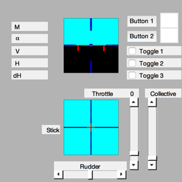
Initialize the plots
plots = [ 'Euler angles ';...
'Quaternion ';...
'Quaternion NED To B';...
'Angular rate ';...
'Position ECI ';...
'Velocity ';...
'Alpha ';...
'Rudder ';...
'Throttle ';...
'Aileron ';...
'Elevator '];
dPlot = ACPlot( x, 'init', plots, d, nSim/2, dT, nSim );
Initialize the time display
tToGoMem.lastJD = 0;
tToGoMem.lastStepsDone = 0;
tToGoMem.kAve = 0;
[ ratioRealTime, tToGoMem ] = TimeGUI( nSim, 0, tToGoMem, 0, dT, 'Airship Simulation' );
for k = 2:nSim
[ ratioRealTime, tToGoMem ] = TimeGUI( nSim, k, tToGoMem, ratioRealTime, dT );
hHUD = HUD( 'run', dHUD, x, hHUD, cHUD );
d.control.dELVL = (hHUD.control.elevator+.5*hHUD.control.aileron)*pi/180;
d.control.dELVR = (hHUD.control.elevator-.5*hHUD.control.aileron)*pi/180;
d.control.dRUDB = (hHUD.control.rudder +.5*hHUD.control.aileron)*pi/180;
d.control.dRUDT = (hHUD.control.rudder -.5*hHUD.control.aileron)*pi/180;
d.control.throttle = hHUD.control.throttle;
dPlot = ACPlot( x, 'store', dPlot, hHUD.control );
x = AC( x, t, dT, d );
t = t + dT;
switch simulationAction
case 'pause'
pause
simulationAction = ' ';
case 'stop'
TimeGUI('close');
return;
case 'plot'
break;
end
HUDCntrl;
end
TimeGUI('close');
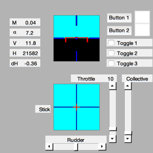
Create the plots
ACPlot( x, 'plot', dPlot );
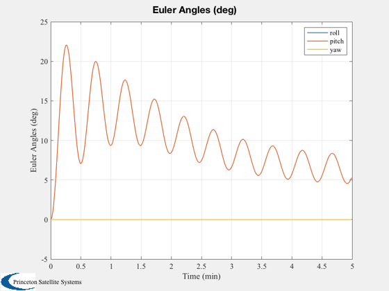

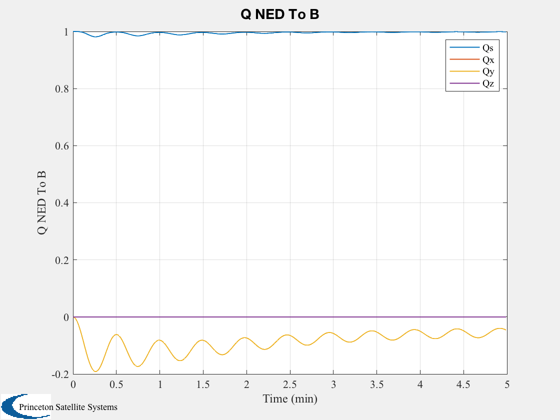 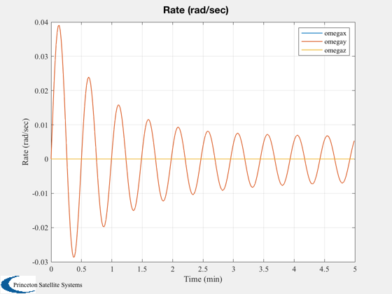 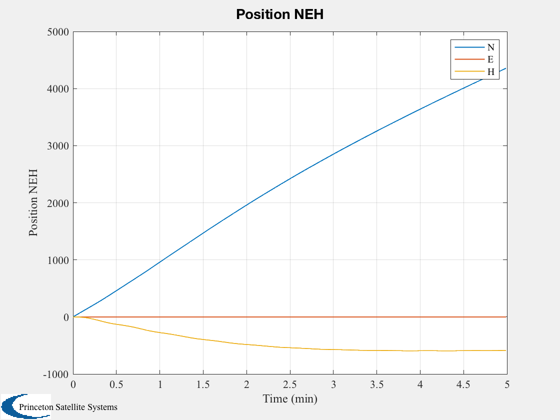 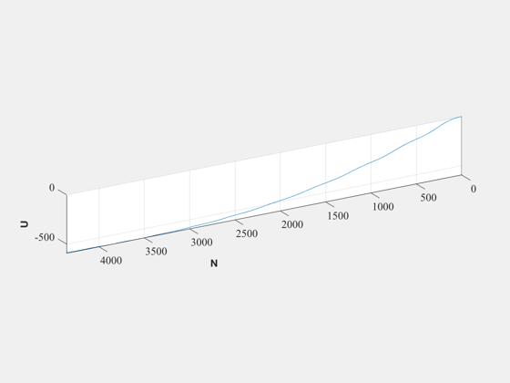 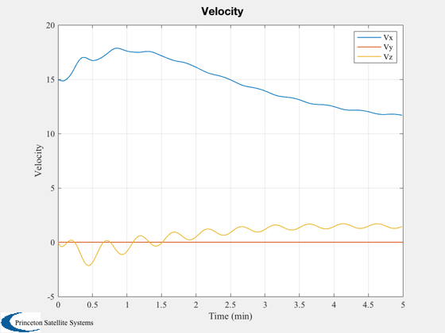 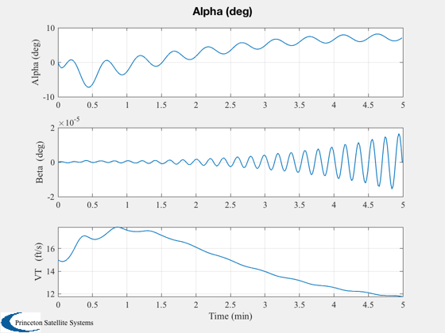 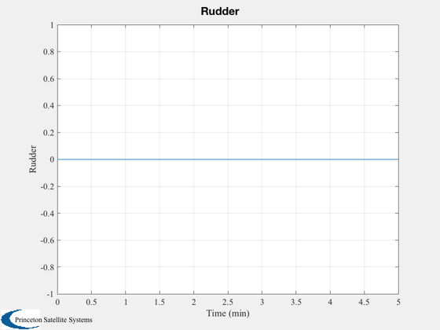 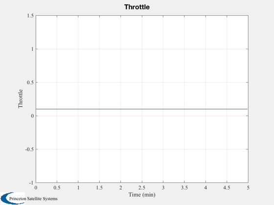 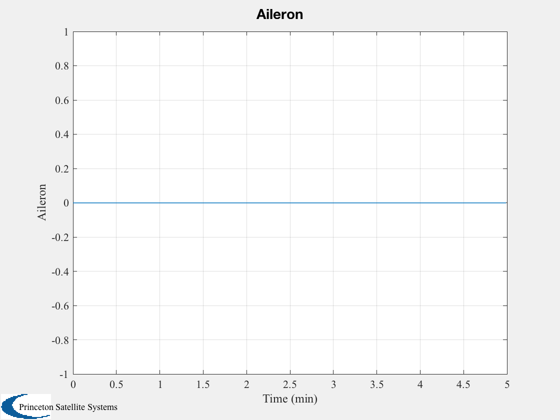 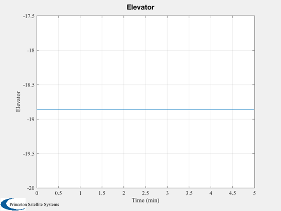